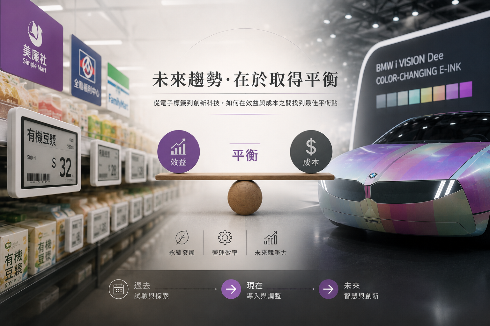

科技發展中的一體兩面：從電子標籤到阻燃材料的思考

隨著 COMPUTEX 2026 盛大登場，汽車巨頭 BMW 首度公開展出的可變色電子紙概念車成為吸睛焦點。此舉不僅展現了車載應用的新可能性，也令市場資金與目光再度聚焦於電子紙（E-paper）技術的創新發展。然而，你是否注意到，這項技術其實早已悄悄走入我們的日常生活？
如果社區附近有美廉社，不妨留意一下商品標籤，已全面改採電子標籤（Electronic Shelf Label, ESL），相比之下，7-ELEVEN 與萊爾富，目前仍普遍以傳統紙本標籤為主。
事實上，電子標籤並非新技術。早在十年前，相關系統便已開始推廣，甚至曾於部分超商與量販店進行試驗。然而，直到近幾年才逐漸進入大規模導入階段。以美廉社為例，其於2025年6月底正式完成全台約800家門市的電子標籤建置，成為台灣首家實現全店數位化電子標籤的連鎖超市。此外，全聯、全家便利商店以及 Walmart 等大型零售業者，也陸續加速推動電子標籤的全面導入。
一、電子紙大規模商用的一體兩面
電子標籤的優點相當明顯。它能減少紙張製作、印刷、運送與廢棄處理所消耗的資源，降低碳排放，同時提升價格管理效率。但另一方面，導入成本也十分可觀。一家門市可能需要更換 1,000 至 2,000 個標籤，還需建置無線射頻基地台、更新管理系統，以及負擔後續維護費用。因此，企業往往必須評估投資成本、回收年限與未來市場趨勢。
然而，電子標籤是否全面導入，除了取決於成本與效益評估外，也涉及企業對未來趨勢的判斷。對許多業者而言，問題或許不是「要不要導入」，而是「何時導入最合適」。不只是電子紙，環顧我們身邊的科技，幾乎所有邁向未來的抉擇，都帶著這種效益與風險一體兩面、光影相隨的本質：
1. 防曬外套 vs 生態累積
能阻擋紫外線保護人體，但材料中的化學吸收劑流入水體後不易分解，反而造成水生生物的生態危機。
2. 太陽能板 vs 製造污染
發電過程能減少碳排，但前端的製造、後端的回收，以及儲能技術的瓶頸，依然是綠能無法迴避的代價。
3. 核能轉型 vs 廢料風險
核能發電長期以來都是重要議題。關閉核電後，是否有足夠且穩定的替代能源可供補足？而持續運轉核電廠，又必須面對核廢料處理與安全風險等問題。
二、塑膠高分子在阻燃應用的一體兩面
以塑膠阻燃技術為例，當塑膠中添加鹵系阻燃劑時，雖然能提高極限氧指數（LOI），達到阻燃標準，但若單純大量添加阻燃劑，往往會破壞材料原有的物理性質。
換句話說，阻燃性能雖然達標了，但塑膠原本應具備的機械強度、耐衝擊性、延伸率及耐熱性卻可能下降，甚至導致整體物性無法達到應用標準。例如應用於電線電纜時，材料需要具備一定的彎折能力，若物性不足，在施工或使用過程中便可能出現外皮破裂的問題。
因此，材料開發的重點並非單純追求某一項性能的極致，而是在各項性能之間取得平衡。
三、應對供應鏈變局：新型 UTFR-NAL 協效劑
本公司所提供的 UTFR-NAL 協效劑，正是基於這樣的理念而開發。透過與鹵系阻燃劑搭配使用，可在降低阻燃劑添加量的同時，兼顧阻燃性能與材料物理性質，避免因大量添加阻燃劑而造成物性顯著下降。
在過去的傳統配方中，這項平衡通常是由三氧化二銻來達成然而近年來，由於中國為反制美國晶片政策，對銻礦、金屬銻及氧化銻等高純度材料實施出口管制，使全球供應鏈結構逐漸改變。
在此背景下，尋找可替代三氧化二銻的新型協效劑，已不再只是技術選項，而可能成為未來產業發展的必然方向。
回到電子貨架標籤的例子，這與阻燃材料的發展本質相同：當未來的方向漸漸成形，企業需要思考的往往不是「要不要改變」，而是「何時改變最合適」。
科技發展從來不是單純的是與非，而是在效益與成本、創新與風險之間不斷尋找平衡。而這種平衡，正是推動產業持續進步的重要力量。
← 返回產業資訊列表